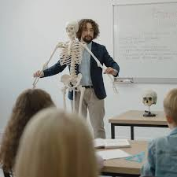

Daftar Artikel
Artikel 1 - ANALISIS REFLEKSI PADA PEMBELAJARAN: REVIEW REASEARCH
https://jurnal.unimus.ac.id/index.php/psn12012010/article/viewFile/4077/3788
Artikel 2 - MENINGKATKAN MOTIVASI BELAJAR SISWA DENGAN MENGGUNAKAN MODEL STUDENT TEAMS ACHIEVEMENT DIVISIONS (STAD)
https://repository.unja.ac.id/4430/1/ARTIKEL%20ILMIAH.pdf